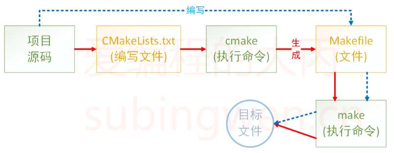

CMake教程
1.CMake 概述
CMake 是一个项目构建工具，并且是跨平台的。关于项目构建还有Makefile（通过make命令进行项目构建），大多数IDE软件都集成了make，比如：VS的make，Linux下的GNU make等，如果自己动手写makefile，会发现，makefile通常依赖于当前的编译平台，而且编写makefile的工作量比较大，解决依赖关系时也容易出错。
而CMake恰好能解决上述问题，其允许开发者指定整个工程的编译流程，再根据编译平台，自动生成本地化的Makefile和工程文件，最后用户只需make编译即可，所以可以吧CMake看成一款自动生成Makefile的工具，其编译流程如下图

- 蓝色虚线表示使用
makefile构建项目的过程 - 红色实线表示使用
cmake构建项目的过程
介绍完CMake的作用之后，再来总结一下它的有点：
- 跨平台
- 能够管理大型项目
- 简化编译构建的过程和编译过程
- 可扩展：可以为cmake编写特定功能的模块，扩充cmake功能
2.CMake的使用
Cmake 支持大写、小写、混合大小写的命令。如果在编写CMakeLists.txt 文件时使用的工具有对应的命令提示，那么大小写随缘即可，不要太过在意。
2.1 注释
2.1.1 行注释
CMake 使用# 进行行注释 ，可以放在任意位置
# 这是一个 CMakeLists.txt 文件
cmake_minimum_required(VERSION 3.0.0)
2.1.2 块注释
Cmake 使用#[[]] 形式进行块注释 。
#[[ 这是一个 CMakeLists.txt 文件。
这是一个 CMakeLists.txt 文件
这是一个 CMakeLists.txt 文件]]
cmake_minimum_required(VERSION 3.0.0)
2.2 只有源文件
2.2.1 共处一室
- 准备工作，准备了几个测试文件
- add.cpp
#include <stdio.h>
#include "head.h"
int add(int a, int b)
{
return a+b;
}
- sub.cpp
#include <stdio.h>
#include "head.h"
int subtract(int a, int b)
{
return a-b;
}
- mult.cpp
#include <stdio.h>
#include "head.h"
int multiply(int a, int b)
{
return a*b;
}
- div.cpp
#include <stdio.h>
#include "head.h"
double divide(int a, int b)
{
return (double)a/b;
}
- head.h
#ifndef _HEAD_H
#define _HEAD_H
// 加法
int add(int a, int b);
// 减法
int subtract(int a, int b);
// 乘法
int multiply(int a, int b);
// 除法
double divide(int a, int b);
#endif
- main.cpp
#include <stdio.h>
#include "head.h"
int main()
{
int a = 20;
int b = 12;
printf("a = %d, b = %d\n", a, b);
printf("a + b = %d\n", add(a, b));
printf("a - b = %d\n", subtract(a, b));
printf("a * b = %d\n", multiply(a, b));
printf("a / b = %f\n", divide(a, b));
return 0;
}
- 上述文件的目录结构如下：
$ tree
.
├── add.c
├── div.c
├── head.h
├── main.c
├── mult.c
└── sub.c
- 添加
CMakeLists.txt文件
在上述源文件所在目录下添加一个新文件CMakeLists.txt，文件内容如下：
cmake_minimum_required(VERSION 3.0)
project(CALC)
add_executable(app add.c div.c main.c mult.c sub.c)
-
cmake_minimum_required：指定使用的cmake最低版本 -
project：定义工程名称，并可指定工程的版本、工程描述、web主页地址、支持的语言（默认情况支持所有语言），如果不需要这些都是可以忽略的，只需要指定出工程名字即可。# PROJECT 指令的语法是： project(<PROJECT-NAME> [<language-name>...]) project(<PROJECT-NAME> [VERSION <major>[.<minor>[.<patch>[.<tweak>]]]] [DESCRIPTION <project-description-string>] [HOMEPAGE_URL <url-string>] [LANGUAGES <language-name>...]) -
add_executable：定义工程会生成一个可执行程序add_executable(可执行程序名 源文件名)-
这里的可执行程序名和
project中的项目名没有任何关系 -
源文件名可以是一个也可以是多个，如有多个可用空格或
；间隔# 样式1 add_executable(app add.c div.c main.c mult.c sub.c) # 样式2 add_executable(app add.c;div.c;main.c;mult.c;sub.c)
-
-
执行
CMake命令将CMakeLists.txt文件编辑好之后，就可以执行
cmkae命令了。# cmake 命令原型 $ cmake .(CMakeLists.txt文件所在路径)当执行
cmake命令之后，CMakeLists.txt 中的命令就会被执行，所以一定要注意给cmake命令指定路径的时候一定不能出错。在对应的目录下生成了一个
makefile文件后再执行make命令即可编译。最终可执行程序
app就被编译出来了（这个名字是在 CMakeLists.txt 中指定的）。
2.2.2 VIP包房
通过上面的例子可以看出，如果在CMakeLists.txt 文件所在目录执行了cmake 命令之后就会生成一些目录和文件（包括 makefile 文件），如果再基于makefile文件 执行make 命令，程序在编译过程中还会生成一些中间文件和一个可执行文件，这样会导致整个项目目录看起来很混乱，不太容易管理和维护，此时可以把生成的这些与项目源码无关的文件统一放到一个对应的目录里面，比如build
现在 cmake 命令是在 build 目录中执行的，但是 CMakeLists.txt 文件是 build 目录的上一级目录中，所以 cmake 命令后指定的路径为..，即当前目录的上一级目录。
2.3 私人定制
2.3.1 定义变量
在上面的例子中一共提供了5个源文件，假设这五个源文件需要反复被使用，每次直接将他们的名字写出来确实很麻烦，此时我们就需要定义一个变量，将文件名对应的字符串存储起来，在cmake里定义变量需要使用set 。
# SET 指令的语法是：
# [] 中的参数为可选项, 如不需要可以不写
SET(VAR [VALUE] [CACHE TYPE DOCSTRING [FORCE]])
VAR：变量名VALUE：变量值
# 方式1: 各个源文件之间使用空格间隔
# set(SRC_LIST add.c div.c main.c mult.c sub.c)
# 方式2: 各个源文件之间使用分号 ; 间隔
set(SRC_LIST add.c;div.c;main.c;mult.c;sub.c)
add_executable(app ${SRC_LIST})
2.3.2 指定使用的C++标准
在编写C++程序时，可能会用到C++11、C++14、C++17、C++20等新特性，那么需要再编译的时候再在编译命令中制定出要使用哪个标准：
$ g++ *.cpp -std=c++11 -o app
上面的例子中通过参数-std=c++11 指定出要使用C++11标准编译程序，C++标准对应有一宏叫做CMAKE_CXX_STANDARD 。在CMake中想要指定C++标准有两种方式：
- 在CMakeLists.txt中通过set命令指定
#增加-std=c++11
set(CMAKE_CXX_STANDARD 11)
#增加-std=c++14
set(CMAKE_CXX_STANDARD 14)
#增加-std=c++17
set(CMAKE_CXX_STANDARD 17)
- 在执行cmkae命令时指定出这个宏的值
#增加-std=c++11
set(CMAKE_CXX_STANDARD 11)
#增加-std=c++14
set(CMAKE_CXX_STANDARD 14)
#增加-std=c++17
set(CMAKE_CXX_STANDARD 17)
2.3.3 指定输出的路径
在CMake中指定可执行程序输出的路径，也对应一个宏，叫做EXTCUTABLE_OUTPUT_PATH ，它的值还是通过set 命令进行设置：
set(HOME /home/unluckyless/workSpace/learningNOTE/CMake/example)
set(EXECUTABLE_OUTPUT_PATH ${HOME})
- 第一行：定义一个变量用于存储一个绝对路径
- 第二行：将拼接好的路径值设置给
EXTCUTABLE_OUTPUT_PATH宏- 如果在这个路径中子目录不存在，会自动生成，无需自己手动创建
由于可执行程序是基于cmake命令生成的makefile文件然后再执行make 命令得到的，所以如果此处指定可执行程序生成路径的时候使用的是相对路径 ./xxx/xxx，那么这个路径中的./对应的是makefile文件所在的目录。
2.4 搜索文件
如果一个项目里面的源文件很多吗，在编写CMakeLists.txt 文件时不可能将项目目录的各个文件一一罗列出来，这样太麻烦也不现实。所以CMake中提供了搜索文件的命令，可以使用aux_source_directory 命令或者file 命令。
2.4.1 方式1
在CMake中使用aux_source_directory 命令可以查找某个路径下的所有源文件 ，命令格式为：
aux_source_directory(< dir > < variable >)
dir：要搜索的目录variable：将dir目录下搜索到的源文件列表存储到该变量中
cmake_minimum_required(VERSION 3.0)
project(CALC)
include_directories(${PROJECT_SOURCE_DIR}/include)
# 搜索 src 目录下的源文件
aux_source_directory(${CMAKE_CURRENT_SOURCE_DIR}/src SRC_LIST)
add_executable(app ${SRC_LIST})
2.4.2 方式2
在CMake中使用file 命令
file(GLOB/GLOB_RECURSE 变量名 要搜索的文件路径和文件类型)
GLOB：将指定目录下搜索到的满足条件的所有文件生成一个列表，并将其存储到变量中CLOB_RECURSE：递归搜索指定目录，将搜索到的满足条件的文件名生成一个列表，并将其存储到变量中。
file(GLOB MAIN_SRC ${CMAKE_CURRENT_SOURCE_DIR}/src/*.cpp)
file(GLOB MAIN_HEAD ${CMAKE_CURRENT_SOURCE_DIR}/include/*.h)
2.5 包含头文件
在编译项目源文件时，很多时候都需要将源文件对应的头文件路径指定出来，这样才能保证在编译的过程中编译器能够找到这些头文件，并顺利通过编译。在CMake中设置要包含的目录也很简单，通过一个命令就可以搞定：
include_directories(headpath)
2.6 制作动态库或静态库
有时候编写的源代码并不需要将他们编译生成可执行程序，而是生成一些静态库或动态库提供给第三方使用，下面是在cmake中生成这两类库的方法。
2.6.1 制作静态库
在cmake中，如果要制作静态库，需要使用的命令如下：
add_library(库名称 STATIC 源文件1 [源文件2] ...)
在Linux中，静态库名字分为三部分：lib + 库名字 + .a ，此处只需要指定出库的名字就可以了，另外两部分在生成该文件的时候会自动填充。
在Windows中虽然库名和Linux格式不同，但也只需要指定出名字即可。
下面有个一目录，需要将src 目录中源文件编译成静态库，然后再使用;
.
├── build
├── CMakeLists.txt
├── include # 头文件目录
│ └── head.h
├── main.cpp # 用于测试的源文件
└── src # 源文件目录
├── add.cpp
├── div.cpp
├── mult.cpp
└── sub.cpp
根据上面的目录结构，可以这样编写CMakeLists.txt 文件：
cmake_minimum_required(VERSION 3.0)
project(CALC)
include_directories(${PROJECT_SOURCE_DIR}/include)
file(GLOB SRC_LIST "${CMAKE_CURRENT_SOURCE_DIR}/src/*.cpp")
add_library(calc STATIC ${SRC_LIST})
这样最终就会生成对应的静态库文件libcalc.a 。
2.6.2 制作动态库
在cmake中，如果要制作动态库，需要使用的命令如下：
add_library(库名称 SHARED 源文件1 [源文件2] ...)
在Linux中，动态库名字分为三部分：lib + 库名字 + .so ，此处只需要指定出库的名字就可以了，另外两部分在生成该文件的时候会自动填充。
在Windows中虽然库名和Linux格式不同，但也只需要指定出名字即可。
根据上面的目录结构，可以这样编写CMakeLists.txt 文件;
cmake_minimum_required(VERSION 3.0)
project(CALC)
include_directories(${PROJECT_SOURCE_DIR}/include)
file(GLOB SRC_LIST "${CMAKE_CURRENT_SOURCE_DIR}/src/*.cpp")
add_library(calc SHARED ${SRC_LIST})
这样最终会生成对应的动态库文件libcalc.so。
2.6.3 指定输出的路径
方式1- 适用于动态库
对于生成的库文件来说和可执行程序一样都可以指定输出路径。由于在Linux系统下生成的动态库默认是有执行权限的 ，所以可以按照生成可执行程序的方式去指定它生成的目录：
cmake_minimum_required(VERSION 3.0)
project(CALC)
include_directories(${PROJECT_SOURCE_DIR}/include)
file(GLOB SRC_LIST "${CMAKE_CURRENT_SOURCE_DIR}/src/*.cpp")
# 设置动态库生成路径
set(EXECUTABLE_OUTPUT_PATH ${PROJECT_SOURCE_DIR}/lib)
add_library(calc SHARED ${SRC_LIST})
对于这种方式来说，其实就是通过set 命令给EXECUTABLE_OUTPUT_PATH 宏设置了一个路径，这个路径就是可执行文件生成的路径。
方式2-都适用
由于在Linux下生成的静态库默认不具有可执行权限，所以在指定静态库生成的路径的时候就不能使用EXECUTABLE_OUTPUT_PATH 宏了，而应该使用LIBRARY_OUTPUT_PATH ，这个宏对应静态库文件和动态库文件都适用。
cmake_minimum_required(VERSION 3.0)
project(CALC)
include_directories(${PROJECT_SOURCE_DIR}/include)
file(GLOB SRC_LIST "${CMAKE_CURRENT_SOURCE_DIR}/src/*.cpp")
# 设置动态库/静态库生成路径
set(LIBRARY_OUTPUT_PATH ${PROJECT_SOURCE_DIR}/lib)
# 生成动态库
#add_library(calc SHARED ${SRC_LIST})
# 生成静态库
add_library(calc STATIC ${SRC_LIST})
2.7 包含库文件
在编写程序的过程中，可能会用到一些系统提供的动态库或者自己制作的出的动态库或者静态库，cmake中也为我们提供了相关的加载动态库的命令
2.7.1 链接静态库
在cmkae中，链接静态库的命令如下：
link_libraries(<static lib> [<static lib>...])
- 参数1：指定要链接的静态库的名字
- 可以是全名
libxxx.a - 也可以是掐头（
lib）去尾（.a）之后的名字xxx
- 可以是全名
- 参数2-N：要链接的其它静态库的名字
如果该静态库不是系统提供的（自己制作或者使用第三方提供的静态库）可能出现静态库找不到的情况，此时可以将静态库的路径也指定出来：
link_directories(<lib path>)
2.7.2 链接动态库
在程序编写过程中，除了在项目中引入静态库，好多时候也会使用一些标准的或者第三方提供的一些动态库。在cmake 中链接动态库的命令如下：
target_link_libraries(
<target>
<PRIVATE|PUBLIC|INTERFACE> <item>...
[<PRIVATE|PUBLIC|INTERFACE> <item>...]...)
target：指定要加载动态库的文件的名字- 该文件可能是一个源文件
- 该文件可能是一个动态库文件
- 该文件可能是一个可执行文件
- PRIVATE | PUBLIC | INTERFACE ：动态库的访问权限，默认为
PUBLIC-
如果各个动态库之间没有依赖关系，无需做任何设置，三者没有区别，一般无需指定，使用默认的PUBLIC即可。
-
动态库的链接具有传递性，如果动态库A链接了动态库B、C，动态库连接了A，此时动态库D相当于也连接了动态库B、C，并可以使用动态库B、C中定义的方法。target_link_libraries(A B C) target_link_libraries(D A) -
PUBLIC：在public后面的库会被Link到前面的target中，并且里面的符号也会被导出，提供给第三方使用。 -
PRIVATE：在private后面的库仅被link到前面的库中，并且终结掉，第三方不能感知到你调用了什么库。 -
INTERFACE：在interface后面的库不会被连接到前面的target中，只会导出符号。
-
链接系统动态库
动态库的链接和静态库是完全不同的：
- 静态库会生成可执行程序的链接阶段被打包到可执行程序中，所以可执行程序启动，静态库就被加载到内存中了。
- 动态库在生成可执行程序的链接阶段不会被打包到可执行程序中，当可执行程序被启动并且调用了动态库中的函数的时候，动态库才会加载到内存
因此，在cmake 中指定要链接的动态库的时候，应该将命令写到生成了可执行文件之后：
cmake_minimum_required(VERSION 3.0)
project(TEST)
file(GLOB SRC_LIST ${CMAKE_CURRENT_SOURCE_DIR}/*.cpp)
# 添加并指定最终生成的可执行程序名
add_executable(app ${SRC_LIST})
# 指定可执行程序要链接的动态库名字
target_link_libraries(app pthread)
在target_link_libraries(app pthread) 中：
app：对应的是最终生成的可执行程序的名字pthread：这是可执行程序要加载的动态库，这个库是系统提供的线程库，全名为libpthread.so
链接第三方动态库
现在，自己生成了一个动态库，对应的目录结构如下：
$ tree
.
├── build
├── CMakeLists.txt
├── include
│ └── head.h # 动态库对应的头文件
├── lib
│ └── libcalc.so # 自己制作的动态库文件
└── main.cpp # 测试用的源文件
3 directories, 4 files
假设在测试文件main.cpp ：中既使用了自己制作的动态库libcalc.so 又使用了系统提供的线程库，此时CMakeLists.txt 文件可以这样写：
cmake_minimum_required(VERSION 3.0)
project(TEST)
file(GLOB SRC_LIST ${CMAKE_CURRENT_SOURCE_DIR}/*.cpp)
# 指定源文件或者动态库对应的头文件路径
include_directories(${PROJECT_SOURCE_DIR}/include)
# 指定要链接的动态库的路径
link_directories(${PROJECT_SOURCE_DIR}/lib)
# 添加并生成一个可执行程序
add_executable(app ${SRC_LIST})
# 指定要链接的动态库
target_link_libraries(app pthread calc)
2.8 日志
在CMake中可以用用户显示一条消息，该命令的名字为message ：
message([STATUS|WARNING|AUTHOR_WARNING|FATAL_ERROR|SEND_ERROR] "message to display" ...)
（无）：重要消息STATUS：非重要消息WARNING：CMake 警告，会继续执行AUTHOR_WARNING：CMake警告（dev），会继续执行SEND_ERROR：CMake 错误，继续执行，但是会跳过生成的步骤FATAL_ERROR：CMake 错误，终止所有处理过程
CMake的命令行工具会在stdout上显示STATUS 消息，在stderr上显示其它消息。CMake的GUI会在它的log区域显示所有消息。
CMake警告和错误消息的文本显示使用的是一种简单的标记语言。文本没有缩进，超过长度的行会回卷，段落之间以新行作为分隔符。
# 输出一般日志信息
message(STATUS "source path: ${PROJECT_SOURCE_DIR}")
# 输出警告信息
message(WARNING "source path: ${PROJECT_SOURCE_DIR}")
# 输出错误信息
message(FATAL_ERROR "source path: ${PROJECT_SOURCE_DIR}")
2.9 变量追加
2.9.1 追加
有时候项目中的源文件并不一定都在同一个目录中，但是这些源文件最终却需要一起进行编译来生成最终的可执行文件或者库文件。如果我们通过fiel 命令对各个目录下的源文件进行搜索，最后还需要做一个字符串拼接的操作，关于字符串拼接可以使用set 命令也可以使用list 命令。
-
使用set拼接
如果使用set进行字符串拼接，对应的命令格式如下：
set(变量名 ${变量名1} ${变量名2} ...)关于上面的命令其实就是将从第二个参数开始往后所有的字符串进行拼接，最后将结果存储到第一个参数中，如果第一个参数中原来有数据会对原数据就行覆盖。
-
使用list拼接
如果使用list进行字符串拼接，对应的命令格式如下：
list(APPEND <list> [<element> ...])
list 命令的功能比set 要强大，字符串拼接只是它的其中一个功能，所以需要在它第一个参数的位置指定出我们要做的操作，APPEND 表示进行数据追加，后边的参数和set 就一样了。
cmake_minimum_required(VERSION 3.0)
project(TEST)
set(TEMP "hello,world")
file(GLOB SRC_1 ${PROJECT_SOURCE_DIR}/src1/*.cpp)
file(GLOB SRC_2 ${PROJECT_SOURCE_DIR}/src2/*.cpp)
# 追加(拼接)
list(APPEND SRC_1 ${SRC_1} ${SRC_2} ${TEMP})
message(STATUS "message: ${SRC_1}")
在CMake中，使用set 命令可以创建一个list 。一个list 内部是一个由分号； 分割的一组字符串。例如，set（var a b c d e） 命令将会去创建一个list：a;b;c;d;e ，但是最终打印变量值的时候得到的是abcde 。
set(tmp1 a;b;c;d;e)
set(tmp2 a b c d e)
message(${tmp1})
message(${tmp2})
##### 输出结果
abcde
abcde
2.9.2 字符串移除
我们在通过file 搜索某个目录就得到了该目录下所有的源文件，但是其中有些源文件并不是我们所需要的，比如：
$ tree
.
├── add.cpp
├── div.cpp
├── main.cpp
├── mult.cpp
└── sub.cpp
0 directories, 5 files
在当前的目录有五个源文件，其中main.cpp 是一个测试文件。如果我们想要把计算器相关的源文件生成一个动态库给别人使用，那么只需要add.cpp、div.cpp、mult.cpp、sub.cpp 这四个源文件就可以了。此时就需要将mian.cpp 从搜索到的数据中剔除出去，想要实现这个功能，也可以使用list
list(REMOVE_ITEM <list> <value> [<value> ...])
关于list 命令还有其他功能
-
获取list的长度
list(LENGTH <list> <output variable>)LENGTH：子命令LENGTH用于读取列表的长度<list>：当前操作的列表<output variable>：新创建的变量，用于存储列表的长度
-
读取列表中指定索引的元素，可以指定多个索引
list(GET <list> <element index> [<element index> ...] <output variable>)<list>：当前操作的列表<element index>：列表元素的索引- 从0开始编号，索引0的元素为列表中的第一个元素；
- 索引也可以是负数，
-1表示列表的最后一个元素，-2表示列表倒数第二个元素，以此类推 - 当索引（不管是正还是负）超过列表的长度，运行会报错
<output variable>：新创建的变量，存储指定索引元素的返回结果，也是一个列表
-
将列表中的元素用连接符（字符串）连接起来组成一个字符串
list (JOIN <list> <glue> <output variable>)<list>：当前操作的列表<glue>：指定的连接符（字符串）<output variable>：新创建的变量，存储返回的字符串
-
查找指定列表是否存在指定的元素，如果未找到，返回-1
list(FIND <list> <value> <output variable>)<list>：当前操作的列表<value>：需要在列表中搜索的元素<output variable>：新创建的变量- 如果
<list>中存在<value>，那么返回<value>在列表中的索引 - 如果未找到则返回-1
- 如果
-
将元素追加到列表中
list (APPEND <list> [<element> ...])list (APPEND <list> [<element> ...]) -
在list中指定位置插入若干元素
list(INSERT <list> <element_index> <element> [<element> ...]) -
将元素插入到列表的0索引位置
list (PREPEND <list> [<element> ...]) -
将列表中最后元素移除
list (POP_BACK <list> [<out-var>...]) -
将列表中第一个元素移除
list (POP_FRONT <list> [<out-var>...]) -
将指定的元素从列表中移除
list (REMOVE_ITEM <list> <value> [<value> ...]) -
将指定索引的元素从列表中移除
list (REMOVE_AT <list> <index> [<index> ...]) -
移除列表中的重复元素
list (REMOVE_DUPLICATES <list>) -
列表翻转
list(REVERSE <list>) -
列表排序
list (SORT <list> [COMPARE <compare>] [CASE <case>] [ORDER <order>])COMPARE：指定排序方法，有如下几种可选：STRING：安装字母顺序进行排序，为默认的排序方法FILE_BASENAME：如果是一系列路径名，会使用basename进行排序NATURAL：使用自然数顺序排序
CASE：指明是否大小写敏感，有如下几种值可选SENSITIVE：按照大小写敏感的方式进行排序，为默认值INSENSITIVE：按照大小写不敏感方式进行排序
ORDER：指明排序的顺序。有如下几种值可选：ASCENDING：按照升序排列，为默认值DESCENDING：按照降序排列
2.10 宏定义
在进行程序测试的时候，我们可以在代码中添加一些宏定义，通过这些宏定义来控制这些代码是否生效，如下所示：
#include <stdio.h>
#define NUMBER 3
int main()
{
int a = 10;
#ifdef DEBUG
printf("我是一个程序猿, 我不会爬树...\n");
#endif
for(int i=0; i<NUMBER; ++i)
{
printf("hello, GCC!!!\n");
}
return 0;
}
在程序的第七行对DEBUG 宏进行了判断，如果该宏被定义了，那么第八行就会进行日志输出，如果没有定义这个宏，第八行就相当于被注释掉了，因此最终无法看到日志输出（上述代码中没有定义这个宏）
为了让测试更灵活，我们可以不在代码中定义这个宏，而是在测试的时候把它定义出来，其中一种方式就是在gcc/g++ 命令中去指定，如下：
$ gcc test.c -DDEBUG -o app
在gcc/g++ 命令中通过参数-D 指定出要定义的宏的名字，这样就相当于在代码中定义了一个宏，其名字为DEBUG 。
在CMake 中也可以做类似的事情，类似的命令叫做add_definitions ：
add_definitions(-D宏名称)
针对于上面的源文件编写一个CMakeLists.txt，内容如下：
cmake_minimum_required(VERSION 3.0)
project(TEST)
# 自定义 DEBUG 宏
add_definitions(-DDEBUG)
add_executable(app ./test.c)
通过这种方式，上述代码中的第八行日志就能够被输出出来了。
3.预定义宏
| 宏 | 功能 |
|---|---|
| PROJECT_SOURCE_DIR | 使用 cmake 命令后紧跟的目录，一般是工程的根目录 |
| PROJECT_BINARY_DIR | 执行 cmake 命令的目录 |
| CMAKE_CURRENT_SOURCE_DIR | 当前处理的 CMakeLists.txt 所在的路径 |
| CMAKE_CURRENT_BINARY_DIR | target 编译目录 |
| EXECUTABLE_OUTPUT_PATH | 重新定义目标二进制可执行文件的存放位置 |
| LIBRARY_OUTPUT_PATH | 重新定义目标链接库文件的存放位置 |
| PROJECT_NAME | 返回通过 PROJECT 指令定义的项目名称 |
| CMAKE_BINARY_DIR | 项目实际构建路径，假设在 build 目录进行的构建，那么得到的就是这个目录的路径 |
4.嵌套的CMake
如果项目很大，或者项目中有很多源码目录，在通过CMake管理项目的时候如果只使用一个CMakeLists.txt，那么这个文件相对会比较复杂，有一种化繁为简的方式就是给每个源码目录都添加一个CMakeLists.txt文件（头文件目录不需要），这样每个文件都不会太复杂，而且更灵活，更容易维护。
先来看一下下面的目录：
$ tree
.
├── build
├── calc
│ ├── add.cpp
│ ├── CMakeLists.txt
│ ├── div.cpp
│ ├── mult.cpp
│ └── sub.cpp
├── CMakeLists.txt
├── include
│ ├── calc.h
│ └── sort.h
├── sort
│ ├── CMakeLists.txt
│ ├── insert.cpp
│ └── select.cpp
├── test1
│ ├── calc.cpp
│ └── CMakeLists.txt
└── test2
├── CMakeLists.txt
└── sort.cpp
6 directories, 15 files
include 目录：头文件目录
calc 目录：目录中的四个源文件对应的加减乘除算法- 对应的头文件是
include中的calc.h
- 对应的头文件是
sort 目录：目录中的两个源文件对应的是插入排序和选择排序算法- 对应的头文件是
include中的sort.h
- 对应的头文件是
test1 目录：测试目录，对加减乘除算法进行测试test2 目录：测试目录，对排序算法进行测试
可以看到各个源文件目录所需要的CMakeLists.txt 文件现在已经添加完毕了。
4.1 准备工作
4.1.1 节点关系
总所周知，Linux的目录是树状结构，所以嵌套的CMake也是一个树状结构，最顶层的CMakeLists.txt是根节点，其次都是子节点 。因此，我们需要了解一些关于CMakeLists.txt 文件变量作用域的一些信息：
- 根节点
CMakeLists.txt中的变量全局有效 - 父节点
CMakeLists.txt中的变量可以再子节点中使用 - 子节点
CMakeLists.txt中的变量只能在当前节点中使用
4.1.2 添加子目录
接下来我们还需要知道在CMake中父子节点之间的关系是如何建立的，这里需要用到一个CMake命令：
add_subdirectory(source_dir [binary_dir] [EXCLUDE_FROM_ALL])
source_dir：指定了CMakeLists.txt源文件和代码文件的位置，其实就是指定子目录binary_dir：指定了输出文件的路径，一般不需要指定，忽略即可。EXCLUDE_FROM_ALL：在子路径下的目标默认不会被包含到父路径的ALL目标里，并且也会被排除在IDE工程文件之外。用户必须显式构建在子路径下的目标。
通过这种方式CMakeLists.txt 文件之间的父子关系就被构建出来了。
4.2 解决问题
在上面的目录中我们要做如下事情：
- 通过
test1 目录中的测试文件进行计算器相关的测试 - 通过
test2 目录中的测试文件进行排序相关的测试
现在相当于是要进行模块化测试，对于calc 和sort 目录中的源文件来说，可以将它们显编译成库文件（可以是静态库也可以是动态库）然后再提供给测试文件使用即可。库文件的本质其实还是代码，只不过是从文本格式变成了二进制。
4.2.1 根目录
根目录中的CMakeLists.txt 文件内容如下：
cmake_minimum_required(VERSION 3.0)
project(test)
# 定义变量
# 静态库生成的路径
set(LIB_PATH ${CMAKE_CURRENT_SOURCE_DIR}/lib)
# 测试程序生成的路径
set(EXEC_PATH ${CMAKE_CURRENT_SOURCE_DIR}/bin)
# 头文件目录
set(HEAD_PATH ${CMAKE_CURRENT_SOURCE_DIR}/include)
# 静态库的名字
set(CALC_LIB calc)
set(SORT_LIB sort)
# 可执行程序的名字
set(APP_NAME_1 test1)
set(APP_NAME_2 test2)
# 添加子目录
add_subdirectory(calc)
add_subdirectory(sort)
add_subdirectory(test1)
add_subdirectory(test2)
在根节点对应的文件中主要做了两件事情：定义全局变量 和添加子目录 。
- 定义的全局变量主要是给子节点使用，目的是为了提高子节点中的
CMakeLists.txt文件的可读性和可维护性，避免冗余并降低出错的概率。 - 一共添加了四个子目录，每个子目录中都有一个
CMakeLists.txt文件，这样他们的父子关系就被确定下来了。
4.2.2 calc目录
calc 目录中的CMakeLists.txt 文件内容如下：
cmake_minimum_required(VERSION 3.0)
project(CALCLIB)
aux_source_directory(./ SRC)
include_directories(${HEAD_PATH})
set(LIBRARY_OUTPUT_PATH ${LIB_PATH})
add_library(${CALC_LIB} STATIC ${SRC})
- 第3行
aux_source_directory：搜索当前目录（calc目录）下的所有源文件 - 第4行
include_directory：包含头文件路径，HEAD_PATH是在根节点文件中定义的 - 第5行
set：设置库的生成路径，LIB_PATH是在根节点文件中定义的 - 第6行
add_library：生成静态库，静态库的名字CALC_LIB是在根节点文件中定义的。
4.2.3 sort目录
sort目录中的CMakeLists.txt 文件内容如下：
cmake_minimum_required(VERSION 3.0)
project(SORTLIB)
aux_source_directory(./ SRC)
include_directories(${HEAD_PATH})
set(LIBRARY_OUTPUT_PATH ${LIB_PATH})
add_library(${SORT_LIB} SHARED ${SRC})
- 第6行
add_library：生成动态库，动态库名字SORT_LIB是在根节点文件中定义的。
这个文件中的内容和calc 节点文件中生成的内容类似，只不过这次生成的是动态库。
4.2.4 test1目录
test1目录中的CMakeLists.txt 文件内容如下：
cmake_minimum_required(VERSION 3.0)
project(CALCTEST)
aux_source_directory(./ SRC)
include_directories(${HEAD_PATH})
# include_directories(${HEAD_PATH})
link_libraries(${CALC_LIB})
set(EXECUTABLE_OUTPUT_PATH ${EXEC_PATH})
add_executable(${APP_NAME_1} ${SRC})
- 第4行
include_directories：指定头文件路径，HEAD_PATH变量实在根节点文件中定义的 - 第6行
link_libraries：指定可执行程序要链接静态库，CALC_LIB变量是在根节点文件中定义的 - 第7行
set：指定可执行程序生成的路径，EXEC_PATH变量是在根节点文件中定义的 - 第8行
add_executable：生成可执行程序，APP_NAME_1变量是在根节点文件中定义的
此处的可执行程序连接的的静态库，最终静态库会被打包到可执行程序中，可执行程序启动之后，静态库也就随之被加载到内存中了。
4.2.5 test2目录
test2目录中的CMakeLists.txt 文件内容如下：
cmake_minimum_required(VERSION 3.0)
project(SORTTEST)
aux_source_directory(./ SRC)
include_directories(${HEAD_PATH})
set(EXECUTABLE_OUTPUT_PATH ${EXEC_PATH})
# link_directories(${LIB_PATH})
add_executable(${APP_NAME_2} ${SRC})
target_link_libraries(${APP_NAME_2} ${SORT_LIB})
- 第4行
include_directories：包含头文件路径，HEAD_PATH变量是在根节点文件中定义的 - 第5行
set：指定可执行程序生成的路径，EXEC_PATH变量在根节点文件中定义的 - 第6行
link_directories：指定可执行程序要链接的动态库的路径，LIB_PATH变量是在根节点文件中定义的 - 第7行
add_executable：生成可执行程序，APP_NAME_2变量是在根节点文件中定义的 - 第8行
target_link_libraries：指定可执行程序要链接的动态库的名字
在生成可执行程序的时候，动态库不会被打包到可执行程序内部。当可执行程序启动之后动态库也不会被加载到内存，只有可执行程序调用了动态库中的函数的时候，动态库才会被加载到内存中，且多个进程可以共用内存中的同一个动态库，所以动态库又叫共享库。
4.2.6 构建项目
一切准备就绪之后，开始构建项目，进入到根节点目录的build 目录 中，执行cmake 命令 ，如下：
$ cmake ..
-- The C compiler identification is GNU 5.4.0
-- The CXX compiler identification is GNU 5.4.0
-- Check for working C compiler: /usr/bin/cc
-- Check for working C compiler: /usr/bin/cc -- works
-- Detecting C compiler ABI info
-- Detecting C compiler ABI info - done
-- Detecting C compile features
-- Detecting C compile features - done
-- Check for working CXX compiler: /usr/bin/c++
-- Check for working CXX compiler: /usr/bin/c++ -- works
-- Detecting CXX compiler ABI info
-- Detecting CXX compiler ABI info - done
-- Detecting CXX compile features
-- Detecting CXX compile features - done
-- Configuring done
-- Generating done
-- Build files have been written to: /home/robin/abc/cmake/calc/build
可以看到在build 目录中生成了一些文件和目录，如下所示：
$ tree build -L 1
build
├── calc # 目录
├── CMakeCache.txt # 文件
├── CMakeFiles # 目录
├── cmake_install.cmake # 文件
├── Makefile # 文件
├── sort # 目录
├── test1 # 目录
└── test2 # 目录
然后再build 目录下执行make 命令：
- 在项目根目录的
lib目录中生成了静态库libcalc.a - 在项目根目录的
lib目录中生成了动态库libsort.so - 在项目根目录的
bin目录中生成了可执行程序test1 - 在项目根目录的
bin目录中生成了可执行程序test2
$ tree bin/ lib/
bin/
├── test1
└── test2
lib/
├── libcalc.a
└── libsort.so
在项目中，如果将程序中的某个模块制作成了动态库或者静态库并且在CMakeLists.txt 中指定了库的输出目录，而后其它模块又需要加载这个生成的库文件，此时直接使用就可以了，如果没有指定库的输出路径或者需要直接加载外部提供的库文件，此时就需要使用 link_directories 将库文件路径指定出来。
5.流程控制
在CMake的CMakeLists.txt中也可以进行流程控制，也就是说可以像shell脚本那样进行条件判断 和循环 。
5.1 条件判断
关于条件判断其语法格式如下：
if(<condition>)
<commands>
elseif(<condition>) # 可选快, 可以重复
<commands>
else() # 可选快
<commands>
endif()
在进行条件判断的时候，如果有多个条件，那么可以写多个elseif ，最后一个条件可以使用else ，但是开始和结束是必须要成对出现的，分别为：if 和endif 。
5.1.1 基本表达式
if(<expression>)
如果是基本表达式，expression 有如下三种情况：常亮 、变量 、字符串 。
- 如果是
1，ON，YES，TRUE，Y，非零值，非空字符串时，条件判断返回True - 如果是
0，OFF，NO，FALSE，N，IGNORE，NOTFOUND，空字符串时，条件判断返回False
5.1.2 逻辑判断
-
NOT
if(NOT <condition>)其实这就是一个取反操作，如果条件
condition为True将返回False，如果条件condition为False将返回True。 -
AND
if(<cond1> AND <cond2>)如果
cond1和cond2同时为True，返回True否则返回False。 -
OR
if(<cond1> OR <cond2>)如果
cond1和cond2两个条件中至少有一个为True，返回True，如果两个条件都为False则返回False。
5.1.3 比较
-
基于数值的比较
if(<variable|string> LESS <variable|string>) if(<variable|string> GREATER <variable|string>) if(<variable|string> EQUAL <variable|string>) if(<variable|string> LESS_EQUAL <variable|string>) if(<variable|string> GREATER_EQUAL <variable|string>)LESS：如果左侧数值小于右侧，返回TrueGREATER：如果左侧数值大于右侧，返回TrueEQUAL：如果左侧数值等于右侧，返回TrueLESS_EQUAL：如果左侧数值小于等于右侧，返回TrueGREATER_EQUAL：如果左侧数值大于等于右侧，返回True
-
基于字符串比较
if(<variable|string> STRLESS <variable|string>) if(<variable|string> STRGREATER <variable|string>) if(<variable|string> STREQUAL <variable|string>) if(<variable|string> STRLESS_EQUAL <variable|string>) if(<variable|string> STRGREATER_EQUAL <variable|string>)STRLESS：如果左侧字符串小于右侧，返回TrueSTRGREATER：如果左侧字符串大于右侧，返回TrueSTREQUAL：如果左侧字符串等于右侧，返回TrueSTRLESS_EQUAL：如果左侧字符串小于等于右侧，返回TrueSTRGREATER_EQUAL：如果左侧字符串大于等于右侧，返回True
5.1.4 文件操作
1、判断文件或者目录是否存在
if(EXISTS path-to-file-or-directory)
如果文件或者目录存在返回True ，否则返回False
2、判断是不是目录
if(IS_DIRECTORY path)
- 此处目录的path必须是绝对路径
- 如果目录存在返回
True，目录不存在返回False
3、判断是不是软链接
if(IS_SYMLINK file-name)
- 此处的file-name对应的路径必须是绝对路径
- 如果是软链接返回
True，软链接不存在则返回False - 软链接相当于windows里的快捷方式
4、判断是不是绝对路径
if(IS_ABSOLUTE path)
- 关于绝对路径
- 如果是
Linux，该路径需要从根目录开始描述 - 如果是
Windows，该路径需要从盘符开始描述
- 如果是
- 如果是绝对路径返回
True，如果不是绝对路径返回False
5.1.5 其它
-
判断某个元素是否在列表中
if(<variable|string> IN_LIST <variable>)- 如果这个元素在列表中返回
True
- 如果这个元素在列表中返回
-
比较两个路径是否相等
if(<variable|string> PATH_EQUAL <variable|string>)我们在书写某个路径的时候，可能由于误操作会多写几个分隔符，比如把
/a/b/c写成/a//b///c，此时通过STREQUAL对这两个字符串进行比较肯定是不相等的，但是通过PATH_EQUAL去比较两个路径，得到的结果确实相等的
5.2 循环
在CMake中循环有两种方式，分别是：foreach 和while
5.2.1 foreach
使用foreach进行循环，语法格式如下：
foreach(<loop_var> <items>)
<commands>
endforeach()
通过foreach 我们就可以对items 中的数据进行遍历，然后通过loop_var 将遍历到的当前的值取出，在取值的时候有以下几种方法
方法一：
foreach(<loop_var> RANGE <stop>)
RANGE：关键字，表示要遍历范围stop：这是一个正整数，表示范围的结束值，在遍历的时候从0开始，最大值为stop。loop_var：存储每次循环取出的值
方法二：
foreach(<loop_var> RANGE <start> <stop> [<step>])
这是上面方法1 的加强版，我们在遍历一个整数区间的时候，除了可以指定起始范围，还可以指定步长。
RANGE：关键字，表示要遍历范围start：这是一个正整数，表示范围的起始值，也就是说最小值为startstop：这是一个正整数，表示范围的结束值，也就是说最大值为stopstep：控制每次遍历的时候以怎样的步长增长，默认为1，可以不设置loop_var：存储每次循环取出的值
方法3
foreach(<loop_var> IN [LISTS [<lists>]] [ITEMS [<items>]])
这是foreach 的另一个变体，通过这种方式我们可以对更加复杂的数据进行遍历，前两种方式只适用于对某个正整数范围内的遍历。
IN：关键字，表示在xxx里面LISTS：关键字，对应的是列表list，通过set、list可以获得ITEMS：关键字，对应的也是列表loop_var：存储每次循环取出的值
方法4
foreach(<loop_var>... IN ZIP_LISTS <lists>)
通过这种方式，遍历的还是一个或多个列表，可以理解为是方式3 的加强版。因为通过上面的方式遍历多个列表，但是又想把指定列表中的元素取出来使用时做不到的，在这个加强版中就可以轻松实现。
loop_var：存储每次循环取出的值，可以根据要遍历的列表的数量指定多个变量，用于存储对应的列表当前取出的那个值。如果指定了多个变量名，他们的数量应该和列表的数量相等如果只给出了一个loop_var，那么它将一系列的loop_var_N 变量来存储对应列表中的当前项，也就是说loop_var_0 对应第一个列表，loop_var_1对应第二个列表，以此类推。。。。如果遍历的多个列表中一个列表较短，当它遍历完成之后将不会参与后续的遍历（因为其它列表还没有遍历完）
IN：关键字，表示在XXX里面ZIP_LISTS：关键字，对应的列表list，通过set、list可以获得
5.2.2 while
除了使用foreach 也可以使用while 进行循环，关于循环结束对应的条件判断的书写格式和if/elseif 是一样的。while 的语法格式如下：
while(<condition>)
<commands>
endwhile()